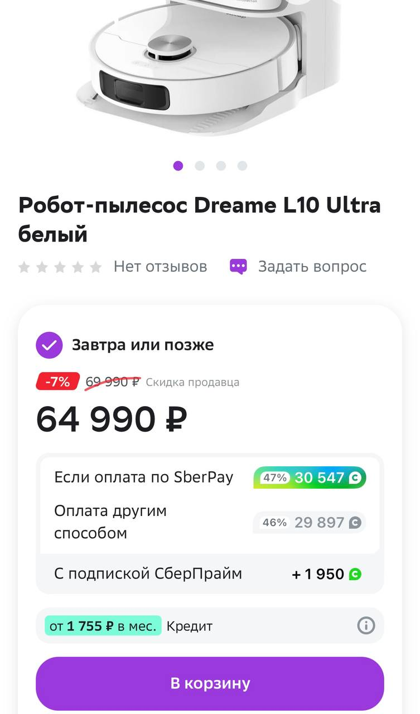

Мегамаркет - что это ?
У сбербанка есть сайт мегамаркет, по сути тот же wildberries, можно найти почти все, что угодно от продуктов, одежды до техники, в общем огромный выбор.
Но фишка в том, что большая часть из них имеют просто огромный кешбек до 80%! Кешбек получаете в виде бонусов спасибо, их можно тратить на покупку продуктов, заправлять автомобиль, на разные купоны и тд.
По сути реальный кешбек, который можно потратить, а не фантики.
Чтобы получать максимальный кешбек нужно оплачивать картой Сбера, с подпиской СберПрайм будет начисляться немного больше, но можно оплатить любой другой картой, правда и кешбек будет меньше.
Единственный минус - это жутко лагучий сайт и приложение, промокоды бывают не срабатывают, товары неожиданно заканчиваются, поэтому может получится не с первого раза. Лучше всего работает ночью.
Говорят, что такии большие кешбеки продлятся до Нового Года, успейте воспользоваться!

Так же имеются выгодные промокоды! Ознакомится можете в разделе "Промокоды"
Кликаем на "Мегамаркет" закупаемся и не забываем про промокоды!
Полный список как получить и где можно потратить можете ознакомиться на сайте https://bankinform.ru/news/120051